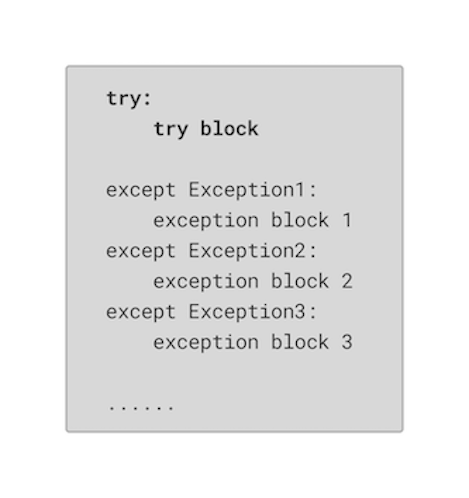
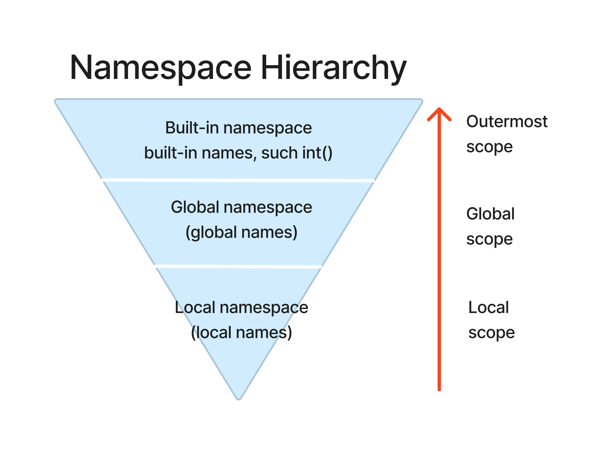

Chapter 4: Errors and Exceptions in Python#
Learning Objectives:#
Errors in Python:
Logical Errors
Syntax Errors
Name Errors
Type Errors
Import Errors
Value Errors
Index Errors
Exceptions in Python:
Built-in exceptions
Handling Exceptions
Text Files IOError
Fix an Error:
Syntax errors
Runtime errors
Scope:
Local Variables
Global Variables
1. Errors in Python#
Errors in Python programming can be a common occurrence during coding. These errors can range from simple syntax mistakes to more complex logical issues. Some of the most common types of errors include syntax errors, and runtime errors, which occur during program execution. Other errors include name errors, type errors, import errors, value errors, and index errors. Understanding and effectively handling these errors is crucial for developing robust and error-free Python programs. It’s also important to learn how to read the error messages to locate the error and helpful for debugging.
1.1 Logical Errors#
Logical errors occur when the code does not produce the expected output due to incorrect logic or algorithmic mistakes. These errors are not detected by the Python interpreter and require careful debugging to identify and fix.
These errors are the worst!
Arise when you complete a code section and it produces results.
But not what you wanted or expected!
Logical Error Example:
I want to find sum of two values but I used multiplication math operator.
def combine(arg1, arg2):
total = arg1 * arg2
return total
combine(arg1=5, arg2=2)
10
1.2 Syntax Errors#
Syntax errors occur when the code violates the syntax rules of Python, when proper wording or codes are not used. These errors are caught by the Python interpreter and are usually indicated by error messages that point to the specific line where the error occurred. Syntax errors need to be fixed before the code can be executed.
Error message might warn.
Cannot be executed by the interpreter (Python) and must be repaired before execution can occur.
Common causes:
keyword is wrong;
variable name is wrong (reserved word);
indentation is not consistent;
not complete:
an unclosed bracket ‘{’, ‘(’, etc.
omitting a colon ‘:’
left open quotes, lists, dictionaries, etc.
Examples:
Read the error messages carefully and correct the errors for the following code.
# correct this error and re-run this cell
nope = "not working correct this error
File "/var/folders/qt/qy37fy6s3c1553y2k74063pr0000gn/T/ipykernel_13497/210383151.py", line 2
nope = "not working correct this error
^
SyntaxError: EOL while scanning string literal
# correct this error and re-run this cell
nope="still no'
Cell In[3], line 2
nope="still no'
^
SyntaxError: unterminated string literal (detected at line 2)
Activity 1
Correct the errors
What type of errors they are?
nope=[1,2,3,4,,5,6]
print “hello World”
# add your codes here for the above activity
See solution for activity 1 at the end.
There has a SyntaxError for the following code.
The elif keyword is used in Python to introduce another condition that should be checked if the preceding if or elif condition(s) is(are) not met. However, just like if, the elif keyword must be followed by a condition. In the code snippet below, the elif statement is missing a condition, which causes a syntax error.
# Example for more syntax error
if (i > 0):
print("i is bigger than 0")
elif: print("smaller than 0")
Cell In[5], line 4
elif: print("smaller than 0")
^
SyntaxError: invalid syntax
# Corrected the above error
i = 5
if i > 0:
print("i is bigger than 0")
elif i < 0:
print("smaller than 0")
i is bigger than 0
Activity 2
Correct the errors
What type of errors they are?
Problem 1
for i in range(1,11, 2):
print(i)
Problem 2
for i in range(8,15, 2):
print(i)
See solution for activity 2 at the end.
1.3 Name Errors#
Name errors occur when a variable or function name is used before it is defined or outside of its scope. This typically happens when the variable or function is misspelled or not declared in the current scope. Name errors can be resolved by ensuring that the variable or function is properly defined and accessible within the relevant scope.
Occur usually when mistyping a variable or function name.
Indicate that Python does not know about what you typed.
Example with name errors:
The following code causes a NameError since the function print is mistyping.
a = 'hiya'
pint(a)
---------------------------------------------------------------------------
NameError Traceback (most recent call last)
Cell In[7], line 2
1 a = 'hiya'
----> 2 pint(a)
NameError: name 'pint' is not defined
The following code causes a NameError since the variable “b” is not defined.
print(b)
---------------------------------------------------------------------------
NameError Traceback (most recent call last)
Cell In[8], line 1
----> 1 print(b)
NameError: name 'b' is not defined
1.4 Type Errors#
Type errors occur when an operation or function is performed on an object of an incompatible type. For example, trying to add a string and an integer will result in a type error; trying to divide a number by a letter also result in a type error. Type errors can be resolved by ensuring that the correct types are used for the intended operations or by performing appropriate type conversions.
The following code tries to add a string to a number, which causes the TypeError.
# Type Error
a = 'hiya'
b = 5
print(a+b)
---------------------------------------------------------------------------
TypeError Traceback (most recent call last)
Cell In[9], line 4
2 a = 'hiya'
3 b = 5
----> 4 print(a+b)
TypeError: can only concatenate str (not "int") to str
1.5 Import Errors#
Import errors occur when there is a problem with importing a module or package in Python. This can happen if the module or package is not installed or if it cannot be found in the specified location. Import errors can be resolved by ensuring that the required module or package is installed and accessible to the Python interpreter.
Since there’s no module called “mathematics”, it causes the ModuleNotFoundError.
# error
import mathematics
---------------------------------------------------------------------------
ModuleNotFoundError Traceback (most recent call last)
Cell In[10], line 2
1 # error
----> 2 import mathematics
ModuleNotFoundError: No module named 'mathematics'
# corrected
import math
1.6 Value Errors#
Value errors occur when a function receives an argument of the correct type but with an invalid / inappropriate value. For example, passing a negative number to a function that expects a positive number may result in a value error. Value errors can be resolved by validating input values and ensuring they fall within the acceptable range.
Activity 3
Correct the errors
What type of errors they are?
a = 5
k = [3, 2, 4, 51, 6]
k.remove(a)
See solutions for activity 3 at the end.
1.7 Index Errors#
Index errors occur when attempting to access an element in a sequence using an invalid index. This typically happens when the index is out of range or does not exist in the sequence. Index errors can be resolved by checking the bounds of the sequence and ensuring that the index is within the valid range.
The following list x has 3 elements, thus the index should be 0, 1, 2 for each of the element. When we attempt to access the fifth element (with index 4) of the list x, it causes the IndexError.
To correct the code above, we can call x[0], x[1], or x[2], to access the existing elements.
# Index Error Example
x = [1, 2, 3]
x[4]
---------------------------------------------------------------------------
IndexError Traceback (most recent call last)
Cell In[12], line 5
1 # Index Error Example
3 x = [1, 2, 3]
----> 5 x[4]
IndexError: list index out of range
First we create a range of integers from 0 to 4 inclusive by the range() function and a list named “ok” with three elements: 100,200,300.
In the for loop, we iterate over each value in p, represented by variable “m”. And the print() command inside the loop executes once for each value of “m”. It attempts to print the mth element of the list named “ok”.
When m is 0, 1, and 2, this line will print 100, 200, and 300, respectively, because those are the values at those indices in “ok”.
However, when “m” is goes larger than 2, this line will raise an IndexError, because “ok” doesn’t have elements at those indices.
# Index Error Example
p = range(0, 5)
ok = [100, 200, 300]
for m in p:
print(ok[m])
100
200
300
---------------------------------------------------------------------------
IndexError Traceback (most recent call last)
Cell In[13], line 5
3 ok = [100, 200, 300]
4 for m in p:
----> 5 print(ok[m])
IndexError: list index out of range
# corrected
p = range(0, 3)
ok = [100, 200, 300]
for m in p:
print(ok[m])
100
200
300
Lots of Types of Errors#
We have talked about Logical Errors, Syntax Errors, Name Errors, Type Errors, Import Errors, Value Errors, Index Errors.
And many others:
StopIteration
OSError
RuntimeError
AttributeError
LookupError
AssertionError
ArithmeticError
SystemError
ReferenceError
BufferError
MemoryError
WarningError
ZeroDivisionError
More examples:
Python raises a ZeroDivisionError when you try to divide by zero. Also, attempting to divide any number by 0 is mathematically undefined.
# ZeroDivisionError
1/0
---------------------------------------------------------------------------
ZeroDivisionError Traceback (most recent call last)
Cell In[15], line 2
1 # ZeroDivisionError
----> 2 1/0
ZeroDivisionError: division by zero
Only individual numeric values (or strings that can be parsed as individual numeric values) can be converted into floats.
float([1,2,3])
---------------------------------------------------------------------------
TypeError Traceback (most recent call last)
Cell In[16], line 1
----> 1 float([1,2,3])
TypeError: float() argument must be a string or a real number, not 'list'
Since “strVal” doesn’t represent a numeric value, Python can’t convert it into a float and raises a ValueError.
x = float("strVal")
---------------------------------------------------------------------------
ValueError Traceback (most recent call last)
Cell In[17], line 1
----> 1 x = float("strVal")
ValueError: could not convert string to float: 'strVal'
Resolution for the errors:
# corrected
float(1)
1.0
Note
NaNis a special floating-point value. It represents a value that isundefined or unrepresentable.In Python,
NaNcan be created by converting the string “NaN” to a float. Once you have a NaN value, any arithmetic operation involving NaN will also result in NaN.
x = float("NaN")
print(x)
print(x+1)
nan
nan
# Another solution
# float can take one value at a time
x1 = []
x2 = [1, 2, 3]
for x in x2:
x1.append(float(x))
print(x1)
[1.0]
[1.0, 2.0]
[1.0, 2.0, 3.0]
Activity 4
Correct the error
What type of error it is?
float(2.5, 2.4)
See solutions for activity 4 at the end.
Note
Errors ➡ Exceptions
Many of the previously named errors will be detected and shown on the console area
BUT when they are not, it is difficult to identify.
Errors become Exceptions.
When errors detected during execution. If an exception is not handled, the program terminates with a traceback error message.
2. Exceptions in Python#
Exceptions are a fundamental concept in Python programming that allow for the handling of errors and exceptional conditions. When an error occurs during the execution of a program, an exception is raised, indicating that something unexpected has happened. Python provides a range of built-in exceptions that represent different types of errors, and programmers can also create custom exceptions. By using exception handling techniques, such as try-except blocks, programmers can gracefully handle exceptions, prevent program crashes, and implement specific error-handling logic.
Python Built-in Exceptions:#
Python provides a set of built-in exceptions that represent various types of errors and exceptional conditions. These exceptions can be raised when an error occurs, and they can be caught and handled using exception handling techniques.
NameError, SyntaxError, TypeError, ImportError, ValueError, etc. are commonly raised built-in exceptions in Python.
2.1 Handling Exceptions#
Exception handling allows you to detect, catch and handle exceptions in a controlled manner.
By using try-except blocks, you can anticipate potential errors and define appropriate actions to take when those errors occur.
This helps in preventing program crashes and allows for graceful error handling.

Examples for handling exceptions:
The code below allows the user to enter a number repeatedly until a valid integer is provided. If the user enters a non-integer value, a ValueError exception is caught, an error message is displayed, and the program asks the user for input again. Once a valid integer is entered, the loop is broken, and the program continues execution.
while True:
try:
x = int(input("Please enter a number: "))
break
except ValueError:
print("Oops! That was not a valid number. Try again...")
Please enter a number:
Oops! That was not a valid number. Try again...
Please enter a number: gem
Oops! That was not a valid number. Try again...
Please enter a number: gem530
Oops! That was not a valid number. Try again...
Please enter a number: 123
The code above starts with a while loop with the condition “while True,” which means the loop will continue indefinitely unless a break statement is encountered.
Inside the loop, there is a try block, where the program prompts the user to enter a number using the input() function and attempts to convert the user’s input into an integer using the int() function.
- If the user enters a valid integer, the code breaks out of the loop using the break statement.
- If the user enters a value that cannot be converted to an integer (e.g., a string or a float), a ValueError exception is raised.
The `except block` following the try block is designed to catch the ValueError exception. In this case, the program executes the code within the except block, which prints an error message.
The program is still in the while loop and will prompt the user for input again until a valid input received and break out from the loop.
More than one exceptions
The third except block “Exception as e” catches any other exceptions that are not explicitly handled by the previous except blocks.
while True:
try:
x = int(input("Please enter a number: "))
result = 10 / x
print("Result:", result)
break
except ValueError:
print("Oops! That was not a valid number. Try again...")
except ZeroDivisionError:
print("Oops! Cannot divide by zero. Try again...")
except Exception as e:
print("An unexpected error occurred:", str(e))
Please enter a number:
Oops! That was not a valid number. Try again...
Please enter a number: a
Oops! That was not a valid number. Try again...
Please enter a number: 2
Result: 5.0
Activity 5
Write a loop with possible error message
Add “pass” in your loop
See solutions for activity 5 at the end.
Improving float() Method Example:
Float method returns errors when the input is not a number, or a string that can be parsed as individual numeric values)
# simple functioning
def safe_float(object1):
return float(object1)
safe_float("Possible error") # received a ValueError message
---------------------------------------------------------------------------
ValueError Traceback (most recent call last)
Cell In[25], line 1
----> 1 safe_float("Possible error") # received a ValueError message
Cell In[24], line 3, in safe_float(object1)
2 def safe_float(object1):
----> 3 return float(object1)
ValueError: could not convert string to float: 'Possible error'
Solutions:
If “object1” can be successfully converted to a float, then this float value will be returned from the function.
If “object1” cannot be converted to a float, then Python will raise an exception.
If an exception of type ValueError, IndexError, or SyntaxError was raised in the try block, pass is used, which means that the function will do nothing and return None.
# solution1
def safe_float1(object1):
try:
return float(object1)
except (ValueError, IndexError, SyntaxError):
pass
safe_float1("Possible error") # no error message this time
print(safe_float1(88))
print(safe_float1('hh'))
88.0
None
In the second solution, if object1 cannot be converted to a float, Python will raise a ValueError exception, which will print a user-friendly error message guiding the user to enter a valid input that can be converted to a float.
# solution 2
def safe_float2(object1):
try:
return float(object1)
except ValueError:
print("Please enter an integer or a float")
safe_float2(object1=565)
565.0
safe_float2(object1='hh')
Please enter an integer or a float
In the third solution, if object1 cannot be converted to a float, Python will raise either a ValueError (if object1 is a string that doesn’t represent a number) or a TypeError (if object1 is a type of object that can’t be converted to a float), and the corresponding error message will be printed out.
# solution3
def safe_float3(object1):
try:
return float(object1)
except ValueError:
return "not a number"
except TypeError:
return "not a number object"
safe_float3("Possible error")
'not a number'
Clean-up Actions:
Try finally statement is used to define clean-up actions that must be executed under all circumstances.
See more examples here.
Note
try:
try block
except
except block
finally:
finally block
Always executes finally block regardless of exceptions
We first define a function called “divide(x, y)” which attempts to perform division of two numbers and has exception handling for ZeroDivisionError and ValueError exceptions. Additionally, it uses a finally clause to perform cleanup action after the try-except block, regardless of whether an exception was raised or not.
# Clean-up action example: use finally
def divide(x, y):
result = None
try:
result = float(x)/float(y)
return result
except ZeroDivisionError:
print('Division by zero')
except ValueError:
print('Please enter a number')
finally:
print('Cleaning up....')
This call will successfully compute the division. Note the message “Cleaning up….” will be printed out even though there’s no exceptions.
divide(x = 1.5, y = 3)
Cleaning up....
0.5
This call will trigger a ZeroDivisionError, print “Division by zero” message in the except block, and then print “Cleaning up….” in the final block.
divide(x = 3, y = 0)
Division by zero
Cleaning up....
This call will trigger a ValueError, print “Please enter a number” message in the except block, and then print “Cleaning up….”.
divide(x = 3, y = "abc")
Please enter a number
Cleaning up....
2.2 Text files IOError#
IOError ➡ FileNotFoundError is an error when an input/output operation fails on text files, such as the print statement or the open() function when trying to open a file that does not exist, or does not have sufficient permissions or has other file-related issues when reading from or writing to a text file.
How to read, write, append to, etc text files:
path=r'C:\folder1\subfolder\file1.txt'
f = None
This line initializes a variable
fand assigns it the value None.
f = open(path,'r+')
This line opens the file specified by the path variable in read-write mode (‘r+’). It assigns the file object to the variable
f. Ther+mode allows both reading and writing operations on the file.
f.write(“This is a test”) # write this line on the data
This line writes the string “This is a test” to the file associated with the
ffile object. It appends the text at the current file position.
f.close()
This line closes the file associated with the
ffile object. It ensures that all changes made to the file are properly saved and releases any system resources associated with the file.
Modes:
r= read moder+= special read/writew= write modea= append mode
f = None
f = open(r"C:\Users\Suborna\OneDrive - The University Of British Columbia\Documents\GEM530_2022\Lecture\Week4\Example.txt", 'r+')
print(f.name, f.read(), f.__class__)
---------------------------------------------------------------------------
FileNotFoundError Traceback (most recent call last)
Cell In[36], line 3
1 f = None
----> 3 f = open(r"C:\Users\Suborna\OneDrive - The University Of British Columbia\Documents\GEM530_2022\Lecture\Week4\Example.txt", 'r+')
4 print(f.name, f.read(), f.__class__)
File /opt/conda/lib/python3.10/site-packages/IPython/core/interactiveshell.py:282, in _modified_open(file, *args, **kwargs)
275 if file in {0, 1, 2}:
276 raise ValueError(
277 f"IPython won't let you open fd={file} by default "
278 "as it is likely to crash IPython. If you know what you are doing, "
279 "you can use builtins' open."
280 )
--> 282 return io_open(file, *args, **kwargs)
FileNotFoundError: [Errno 2] No such file or directory: 'C:\\Users\\Suborna\\OneDrive - The University Of British Columbia\\Documents\\GEM530_2022\\Lecture\\Week4\\Example.txt'
# Added IOError this time
f = None
try:
f = open(r"C:\Users\Suborna\OneDrive - The University Of British Columbia\Documents\GEM530_2022\Lecture\Week4\Exaample.txt",
'r+')
except IOError:
print("The file does not exist!")
finally:
if f:
print(f.name, f.read(), f.__class__)
The file does not exist!
# Same as above but took out the file location since it exist on the same location where jupter file is located
f = None
try:
f = open(r"Example.txt", 'r+')
except IOError:
print("The file does not exist!")
finally:
if f:
print(f.name, f.read(), f.__class__)
Example.txt hello <class '_io.TextIOWrapper'>
try:
f7 = open(r"Data_inT.txt", 'r+')
print(f7.name)
except IOError:
print("Keep the file in the folder")
print(f7.name)
f7.close
Data_inT.txt
# write a sentence in a file. The following code will create a file and add the text.
ft3 = open(r"example_t1.txt", "w")
ft3.write("This is a test")
print(ft3.name, ft3.mode)
ft3.close()
example_t1.txt w
Note
Get the current working directory in Python: use os module
os module is a Python built-in mocule used for interact with the operating system, including creating filesmanagement of files and directories etc.
# run this cell to get the working directory
# import os module
import os
# get currently working directory
print(os.getcwd())
3. How to Fix Errors?#
Syntax errors
Runtime errors
For the most commonly seen errors in Python programming, we will talk about how to check and fix these errors.
Fix an Error ➡ SyntaxError
Syntax errors occur when the code violates the rules of the Python syntax. To fix syntax errors, you need to carefully review the code and identify the specific line or lines where the error is occurring. Then, correct the syntax mistake(s) by following the correct syntax rules.
Indent correctly?
Using the keywords correctly?
Declaring keywords as the names of variables, functions or classes?
Incomplete statements:
An unclosed bracket ‘{’,’(’,’
Omitting the colon symbol “:”
If,elif, orwhilewithout any conditional expression
Fix an Error ➡ Runtime errors
Runtime errors occur during the execution of a program when unexpected conditions or operations are encountered. To fix runtime errors, you need to identify the cause of the error by examining the error message and stack trace. Once the cause is determined, appropriate modifications can be made to the code to handle the error condition and prevent the program from crashing.
Check the error exception type and recall reasons causing the exception
AttributeError, IndexError, NameError, ValueError, TypeError etc.
Look into the code, especially the line that throws errors carefully and analyze what result in the exception.
If still not sure about the reasons, using ‘print’ to output the value of the variables and check if they are those you want.
Revise code and run again.
4. Scope#
Scope in Python coding refers to the region or portion of code where a variable or name is defined and can be accessed. It is used to indentify the effectiveness of variables and define the visibility and lifetime of variables, functions, and other identifiers within a program. Python has two primary types of scope:
1. Local variables:
Local variables are variables that are defined within a specific scope, such as a function or a block of code. These variables can only be accessed and used within their respective scope. They are created when the scope is entered and destroyed when the scope is exited. Local variables help in encapsulating data and prevent naming conflicts.
2. Global variables:
Global variables are variables that are defined outside of any specific scope and can be accessed from any part of the program. They have a global scope and can be used in different functions or blocks of code. However, using global variables excessively can lead to code complexity and potential issues with variable shadowing or unintended modifications. Care should be taken when using global variables to maintain code readability and avoid naming conflicts.
Local variable example:
The example below show how the local variable can be used inside the range. The variable “var” is defined locally, within the “foo( )” function, and can only be used in this function. However, when we call “var” outside the function, an Error message is expected since “var” is not defined previously and Python cannot find the variable named “var”.
def foo():
var = 20 # Local variable
print(var)
foo()
20
print(var) # Raises NameError, i is not defined outside the function
---------------------------------------------------------------------------
NameError Traceback (most recent call last)
Cell In[43], line 1
----> 1 print(var) # Raises NameError, i is not defined outside the function
NameError: name 'var' is not defined
Global variable example:
The example below show how the global variable can be used both inside and outside the range. The variable “i” is defined globally, outside the range of “foo( )” function. When we call “i” outside the function, Python can find the previously defined variable “i” and print out the value.
i = 10 # Global variable
def foo():
print(i) # Accessing global variable
foo()
10
print(i) # Accessing global variable
10
More examples:
global_x = 5 # global variable
def add():
local_y = 3
return global_x + local_y
add()
8
print(global_x)
5
print(local_y)
---------------------------------------------------------------------------
NameError Traceback (most recent call last)
Cell In[49], line 1
----> 1 print(local_y)
NameError: name 'local_y' is not defined
Global variables are shadowed by local ones exist with the same name:
In the example below:
There are global variables x1 and y1 initialized with a value of 100 and 200 respectively.
Inside the function add(), local variables x1 and y1 are defined with value of 10 and 20 respectively. These local variables shadows the global variable with the same name.
When we call add() function, it accesses the local variable and outputs 30 (10+20).
Outside the add() function, when we print x1 and y1 again, it accesses the global variable and outputs 100 and 200. The global variable is not affected by the local variable with the same name.
# define global variables "x1" and "y1"
x1 = 100
y1 = 200
print(x1,y1)
100 200
def add():
x1 = 10
y1 = 20
return x1 + y1 # accessing local variables
z = add() # z is not using the values outside the def function
print(z)
30
print(x1,y1)
100 200
This example demonstrates how a local variable within a function can have the same name as a global variable, effectively shadowing it within the function’s scope. It highlights the concept of variable shadowing, where the local variable takes precedence over the global variable with the same name within the scope in which it is defined.
Scope: Namespace#
Recall the simple assignement statement: x = “string1”, which creates the the symbol(variable) named x and refers to the string object. With a program of significant complexity, it is common to have a multitude of such symbolic names, each pointing to a distinct object. Python effectively handles this by maintaining separate namespaces, ensuring that these names do not clash or interfere with one another. Namespaces provide a system for organizing and keeping track of the names, enabling the program to maintain clear distinctions and avoid conflicts between them.
In Python, a namespace is a system that organizes and provides a scope for the names (identifiers) used in a program. It serves as a container/space that holds current names for functions or variables, allowing them to be unique and avoid naming conflicts. Namespaces help in organizing and managing the elements of a program, such as variables, functions, classes, modules, and etc.
There are different types of namespaces in Python:
Local Namespace:
Global Namespace
Built-in Namespace
Name search sequence while locating the names: local -> global-> Built-in namespace
This layering of namespaces is called scope.

Use dir( ) to show the available names within a name Space:
The built-in namespace contains the names of all of Python’s built-in objects. You can see some objects here that we have talked about before, for example, the ImportError, built-in functions like max(), min() and print(), and object types like int and tuple, etc.
dir(__builtins__)
['ArithmeticError',
'AssertionError',
'AttributeError',
'BaseException',
'BlockingIOError',
'BrokenPipeError',
'BufferError',
'BytesWarning',
'ChildProcessError',
'ConnectionAbortedError',
'ConnectionError',
'ConnectionRefusedError',
'ConnectionResetError',
'DeprecationWarning',
'EOFError',
'Ellipsis',
'EncodingWarning',
'EnvironmentError',
'Exception',
'False',
'FileExistsError',
'FileNotFoundError',
'FloatingPointError',
'FutureWarning',
'GeneratorExit',
'IOError',
'ImportError',
'ImportWarning',
'IndentationError',
'IndexError',
'InterruptedError',
'IsADirectoryError',
'KeyError',
'KeyboardInterrupt',
'LookupError',
'MemoryError',
'ModuleNotFoundError',
'NameError',
'None',
'NotADirectoryError',
'NotImplemented',
'NotImplementedError',
'OSError',
'OverflowError',
'PendingDeprecationWarning',
'PermissionError',
'ProcessLookupError',
'RecursionError',
'ReferenceError',
'ResourceWarning',
'RuntimeError',
'RuntimeWarning',
'StopAsyncIteration',
'StopIteration',
'SyntaxError',
'SyntaxWarning',
'SystemError',
'SystemExit',
'TabError',
'TimeoutError',
'True',
'TypeError',
'UnboundLocalError',
'UnicodeDecodeError',
'UnicodeEncodeError',
'UnicodeError',
'UnicodeTranslateError',
'UnicodeWarning',
'UserWarning',
'ValueError',
'Warning',
'ZeroDivisionError',
'__IPYTHON__',
'__build_class__',
'__debug__',
'__doc__',
'__import__',
'__loader__',
'__name__',
'__package__',
'__spec__',
'abs',
'aiter',
'all',
'anext',
'any',
'ascii',
'bin',
'bool',
'breakpoint',
'bytearray',
'bytes',
'callable',
'chr',
'classmethod',
'compile',
'complex',
'copyright',
'credits',
'delattr',
'dict',
'dir',
'display',
'divmod',
'enumerate',
'eval',
'exec',
'execfile',
'filter',
'float',
'format',
'frozenset',
'get_ipython',
'getattr',
'globals',
'hasattr',
'hash',
'help',
'hex',
'id',
'input',
'int',
'isinstance',
'issubclass',
'iter',
'len',
'license',
'list',
'locals',
'map',
'max',
'memoryview',
'min',
'next',
'object',
'oct',
'open',
'ord',
'pow',
'print',
'property',
'range',
'repr',
'reversed',
'round',
'runfile',
'set',
'setattr',
'slice',
'sorted',
'staticmethod',
'str',
'sum',
'super',
'tuple',
'type',
'vars',
'zip']
Another example for built-in namespace of the math module:
First, we need to import the math module, and then use the dir() function to display the built-in namespace of the module.
import math
dir(math) # show the built-in namespace of the math module
['__doc__',
'__file__',
'__loader__',
'__name__',
'__package__',
'__spec__',
'acos',
'acosh',
'asin',
'asinh',
'atan',
'atan2',
'atanh',
'ceil',
'comb',
'copysign',
'cos',
'cosh',
'degrees',
'dist',
'e',
'erf',
'erfc',
'exp',
'expm1',
'fabs',
'factorial',
'floor',
'fmod',
'frexp',
'fsum',
'gamma',
'gcd',
'hypot',
'inf',
'isclose',
'isfinite',
'isinf',
'isnan',
'isqrt',
'lcm',
'ldexp',
'lgamma',
'log',
'log10',
'log1p',
'log2',
'modf',
'nan',
'nextafter',
'perm',
'pi',
'pow',
'prod',
'radians',
'remainder',
'sin',
'sinh',
'sqrt',
'tan',
'tanh',
'tau',
'trunc',
'ulp']
The global namespace is the top-level namespace that exists throughout the entire program. Names defined in the global namespace are accessible from any part of the program.
The local namespace is created whenever a function or method is called. It contains names that are local to that function or method. Local namespaces have a limited scope and are destroyed when the function or method execution completes. Names defined in a local namespace are accessible only within that specific scope.
x = 10 # global variable
def foo():
y = 20 # local variable
print("Local Namespace:", dir()) # dir() inside the function - display the local namespace
print("Global Namespace:", dir()) # dir() outside the function - display the global namespace
foo()
Global Namespace: ['In', 'Out', '_', '_1', '_18', '_29', '_31', '_33', '_47', '_53', '_54', '__', '___', '__builtin__', '__builtins__', '__doc__', '__loader__', '__name__', '__package__', '__session__', '__spec__', '_dh', '_i', '_i1', '_i10', '_i11', '_i12', '_i13', '_i14', '_i15', '_i16', '_i17', '_i18', '_i19', '_i2', '_i20', '_i21', '_i22', '_i23', '_i24', '_i25', '_i26', '_i27', '_i28', '_i29', '_i3', '_i30', '_i31', '_i32', '_i33', '_i34', '_i35', '_i36', '_i37', '_i38', '_i39', '_i4', '_i40', '_i41', '_i42', '_i43', '_i44', '_i45', '_i46', '_i47', '_i48', '_i49', '_i5', '_i50', '_i51', '_i52', '_i53', '_i54', '_i55', '_i6', '_i7', '_i8', '_i9', '_ih', '_ii', '_iii', '_oh', 'a', 'add', 'b', 'combine', 'divide', 'exit', 'f', 'f7', 'foo', 'ft3', 'get_ipython', 'global_x', 'i', 'm', 'math', 'ok', 'open', 'os', 'p', 'quit', 'result', 'safe_float', 'safe_float1', 'safe_float2', 'safe_float3', 'x', 'x1', 'x2', 'y1', 'z']
Local Namespace: ['y']
In the above example: the call to dir() outside the function displays the names in the global namespace, showing the names defined in the global scope, including the global variable x.
The call to dir() within the foo() function displays the names in the local namespace, when we call foo() function, showing the names defined within the function’s scope, indicating the local variable y.
x = 10
y = "Hello"
def foo():
z = 20
print(dir()) # display the local namespace
foo()
['z']
In the above example, we defined two global variables x and y, and refer to an integer and a string objects respectively. Then we defined a local variable z in the funciton foo(). When we call the function, it prints out the name in local namespace, within the function’s scope, which is the local variable z only.
More examples to differentiate the global and local namespaces:
The example below shows that we first defined the global variable “count” and assigned an integer 100 to it. Then we defined a function “get_count()”, which includes the local variable “x” and “y”.
# Scope: local and global name space in a function
count = 100 # global variable
def get_count():
global count # making the variable "count" available outside the function range
count = count + 5
x = "Hello"
y = "World"
print(x + ' ' + y)
print(dir())
Since we have defined the variable “count” in global scope, when we print the value of the variable, Python is able to find it and print out the value, the number we assigned to it.
print(count) # prints the global variable from the outside
100
Then, when we call the function “get_count()”, it only prints out the “Hello World” statement and the local namespace within the function range, which are the “x” and “y” variables defined locally inside the function.
get_count()
Hello World
['x', 'y']
Next, we defined two global variable “x” and “y” to refer to two integers, and prints out the result for adding the two numbers together.
x = 1
y = 2
print(x + y) # prints the global variable from the outside
3
Note: when we print out the value of the variable “count” again, after we called the function, it prints the result get from the inner function, which excuted the addition and we made available outside the function.
print(count) # prints the local variable from the inner function
105
The
dir()function to display the names in the global namespace, including the global variable count.
print(dir()) # prints the global variable from the outside
['In', 'Out', '_', '_1', '_18', '_29', '_31', '_33', '_47', '_53', '_54', '__', '___', '__builtin__', '__builtins__', '__doc__', '__loader__', '__name__', '__package__', '__session__', '__spec__', '_dh', '_i', '_i1', '_i10', '_i11', '_i12', '_i13', '_i14', '_i15', '_i16', '_i17', '_i18', '_i19', '_i2', '_i20', '_i21', '_i22', '_i23', '_i24', '_i25', '_i26', '_i27', '_i28', '_i29', '_i3', '_i30', '_i31', '_i32', '_i33', '_i34', '_i35', '_i36', '_i37', '_i38', '_i39', '_i4', '_i40', '_i41', '_i42', '_i43', '_i44', '_i45', '_i46', '_i47', '_i48', '_i49', '_i5', '_i50', '_i51', '_i52', '_i53', '_i54', '_i55', '_i56', '_i57', '_i58', '_i59', '_i6', '_i60', '_i61', '_i62', '_i7', '_i8', '_i9', '_ih', '_ii', '_iii', '_oh', 'a', 'add', 'b', 'combine', 'count', 'divide', 'exit', 'f', 'f7', 'foo', 'ft3', 'get_count', 'get_ipython', 'global_x', 'i', 'm', 'math', 'ok', 'open', 'os', 'p', 'quit', 'result', 'safe_float', 'safe_float1', 'safe_float2', 'safe_float3', 'x', 'x1', 'x2', 'y', 'y1', 'z']
Solutions#
Activity 1#
Both are syntax errors.
# nope=[1,2,3,4,,5,6] # add a number between the commas or delete one comma
# print "hello World" # the parenthesis are missing for the print() function
nope=[1,2,3,4,9,5,6]
print("hello World")
hello World
Activity 2#
# Problem 1
# : was missing: Syntax error
for i in range(1,11, 2):
print(i)
1
3
5
7
9
# Problem 2
# indentation was wrong: IndentationError
for i in range(8,15, 2):
print(i)
8
10
12
14
Activity 3#
The code expects a ValueError, since “5” is not in the list.
# add value 5
k.append(5)
print(k)
# then remove value 5
k.remove(a)
print(k)
[3, 2, 4, 51, 6, 5]
[3, 2, 4, 51, 6]
Activity 4#
float(2.5, 2.4)
TypeError: float can take only 1 argument.
# corrected
float(2.5)
2.5
Activity 5#
while True:
try:
x = int(input("Please enter a number: "))
break
except (TypeError, NameError, ValueError, SyntaxError):
pass
Please enter a number: number
Please enter a number: 123
# another solution
while True:
try:
x = int(input("Please enter a number: "))
break
except ValueError:
print("Oops! That was not a valid number. Try again...")
pass
except SyntaxError:
print("Add a valid number, please!")
pass
except NameError:
print("Oops! It's a name/string. Try again...")
pass
Please enter a number: string
Oops! That was not a valid number. Try again...
Please enter a number: number
Oops! That was not a valid number. Try again...
Please enter a number: integer
Oops! That was not a valid number. Try again...
Please enter a number: a
Oops! That was not a valid number. Try again...
Please enter a number: 8